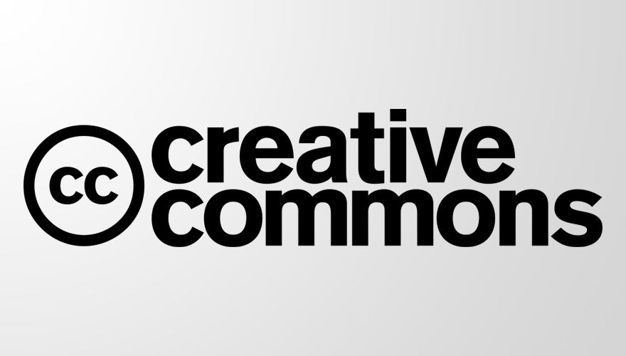
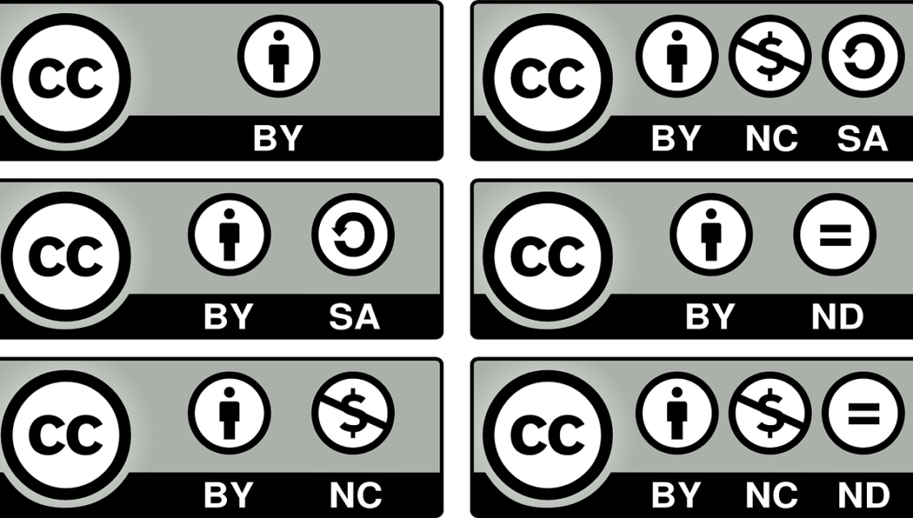

Tema 4: Usabilidad Web
1.Concepto de propiedad intelectual
La propiedad intelectual se refiere a un bien económico y cultural que incluye productos intangibles, al igual que productos físicos, reconocido en la mayor parte de legislaciones de los países y sujeto a explotación económica por parte de los poseedores legales de dicha propiedad.
2.Derechos de la propiedad intelectual
Derechos morales: Los derechos morales en el campo del derecho de autor incluyen dos aspectos específicos, el derecho al reconocimiento de la paternidad de la obra y el derecho de un autor a preservar la integridad de la obra, es decir, a negarse a la realización de modificaciones u obras derivadas de la misma.

Derechos patrimoniales: Los derechos patrimoniales son una clasificación dentro de los derechos subjetivos. Son susceptibles de tener un valor económico y se contraponen a los derechos extra patrimoniales. Los derechos patrimoniales se subdividen en derechos reales, derechos personales y derechos intelectuales.
Derechos de explotación: Son aquellos derechos cuyo titular puede ser una persona natural o jurídica, y que confieren a este la facultad exclusiva de fabricar, emplear, comercializar, importar licenciar, y en general, de gestionar y disponer del producto o procedimiento protegido por el sistema de propiedad industrial.
Derechos compensatorios: Las medidas antidumping, compensatorias y salvaguardia son instrumentos de política comercial, establecidas bajo el acuerdo de la OMC, que tienen por objeto proteger temporalmente a una industria nacional que sufre un daño causado por importaciones.
3.Derechos de autor y copyright
Concepto de derechos de autor y copyright: El copyright se limita a la obra misma y no comprende al creador como sí hace el derecho de autor. Es decir, el derecho de autor reconoce el derecho natural del autor sobre su obra mientras que el copyright reconoce la negociación entre el autor y la sociedad para el uso de esta obra.
Derechos compensatorios: El dominio público lo constituyen todas las obras que no están protegidas por el derecho de autor y que por lo tanto pueden ser utilizadas sin permiso o sin tener que pagar al autor original.
4. Licencias de Creative Commons
Concepto de derechos de autor y copyright: El copyright se limita a la obra misma y no comprende al creador como sí hace el derecho de autor. Es decir, el derecho de autor reconoce el derecho natural del autor sobre su obra mientras que el copyright reconoce la negociación entre el autor y la sociedad para el uso de esta obra.
Derechos compensatorios: El dominio público lo constituyen todas las obras que no están protegidas por el derecho de autor y que por lo tanto pueden ser utilizadas sin permiso o sin tener que pagar al autor original.
5.Licencias de software
Las Licencias de derechos de autor Creative Commons y sus herramientas, forman un equilibrio dentro de la premisa tradicional de "todos los derechos reservados" que las leyes de propiedad intelectual establece. Nuestras herramientas proporcionan a todo el mundo, desde el creador individual a grandes compañías así como a las instituciones, una forma simple y estandarizada de otorgar permisos legales a sus obras creativas.
6.Tipos de licencias de Creative Commons
Reconocimiento (by): Esta licencia permite cualquier explotación de la obra, incluyendo una finalidad comercial, así como la creación de obras derivadas, la distribución de las cuales también está permitida sin ninguna restricción, con la única condición de que se haga referencia expresa al autor, es decir, que aparezca su nombre en cualquier uso o acto de explotación que se haga de la obra.
Reconocimiento - No Comercial (by-nc) Esta licencia permite la generación de obras derivadas siempre que no se haga un uso comercial de las mismas. Tampoco se puede utilizar la obra original con finalidades comerciales.
Reconocimiento - No Comercial - Compartir Igual (by-nc-sa): Esta licencia no permite un uso comercial de la obra original ni de las posibles obras derivadas. Además, la distribución de estas obras derivadas se debe hacer con una licencia igual a la que regula la obra original.